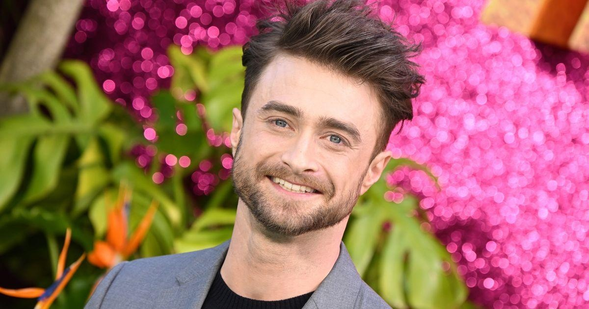

Daniel Radcliffe Explains Body Transformation Amid Wolverine RumorsDaniel Radcliffe is working on his physique but not for the reason fans have been hoping. In a recent Vanity Fair interview alongside his “Merrily We Roll Along” co-stars, Jonathan Groff and Lindsay Mendez, Radcliffe shut down the rumors that he’ll soon be sporting adamantium claws and a bad attitude as Marvel’s Wolverine, during a lie detector test. Fans have long envisioned the “Harry Potter” star stepping in for Hugh Jackman — who has played the beloved mutant in multiple films since 2000 — in a new string of films given that his character was killed off in 2017’s “Logan.” Radcliffe reignited the gossip about his purported role after he wowed fans with his shredded muscles in the Season 4 finale of “Miracle Workers” earlier this year, prompting people to assume his fit body was a sign he would be playing Wolverine soon. But Radcliffe says there’s no truth to the hearsay nor did he kick off the rumor mill. He revealed to Groff and Mendez that he got in shape because he’s “obsessive.” “Yes. I got buff because I am obsessive, and I want to… You’ve seen my parents, they’re like insane fitness people. So that’s just been passed on. But no. No Wolverine. Flattered, but no,” Radcliffe said. In an interview with “The View” last year, Radcliffe, 34, explained that he thinks the Wolverine rumors tend to continue swirling because, “Wolverine is short, so every so often they’re like, ‘Who’s a short actor?’ There’s never been any actual truth to it.” He added: “Every so often I get bored of answering the questions sensibly, so I just make a joke like I did the other day and that sort of has reignited the rumors of it, but there’s nothing going on.” Just a year ago, Radcliffe cleared the air in an interview with GQ, saying that any headlines claiming he was considering the role were “purely a press tour rumor.” “I say something, and then occasionally I get bored of answering that way so I say something different, and that sets it off again,” he shared. “I should just never open my mouth.” Radcliffe also explained he has no interest in playing Wolverine. “I just don’t ever want to get locked into something that I am not sure I will be able to love the same amount the whole time,” he said. Though fans won’t catch Radcliffe suiting up, Jackman is slated to reprise his role as Wolverine in the upcoming “Deadpool 3” film, in theaters May 3, 2024. |
 |